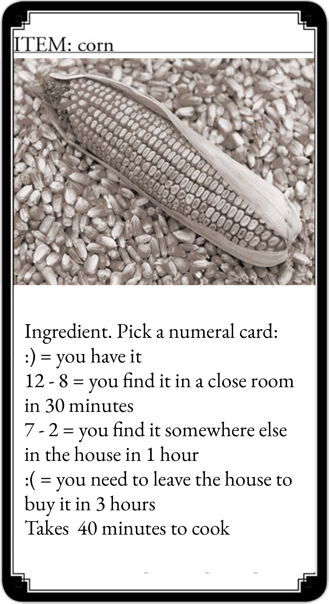

Only José Okoye or Helena Okoye are authorized to perform this ritual. They need to spend 3 magic points and you need to fetch the three ingredients.
You got all the ingredients and they have enough magic points to spend. If you got a stroke of luck , you gain one extra hour in the house. Anyway, you can go back [07].
You manage to help the lady's spirit rest and the baby's spirit turns into a Saci who gives you his red cap and becomes your ally!
You didn't get all the ingredients and/or they don't have enough magic points to spend.
The lady's spirit does not rest but she thanks your efforts anyways. Although the baby's spirit turns into a Saci, it cannot help you. Anyway, you can go back [07].
Everytime you get a happy face in a test, you get an extra hour in the house.
Click if you got all the ingredients and if they have enough magic points to spend.
Click if you didn't get all the ingredients and/or if they don't have enough magic points to spend.
If you had the Sad Mask in the test you need to leave the house to get the ingredients. You spend 6 hours gathering them.